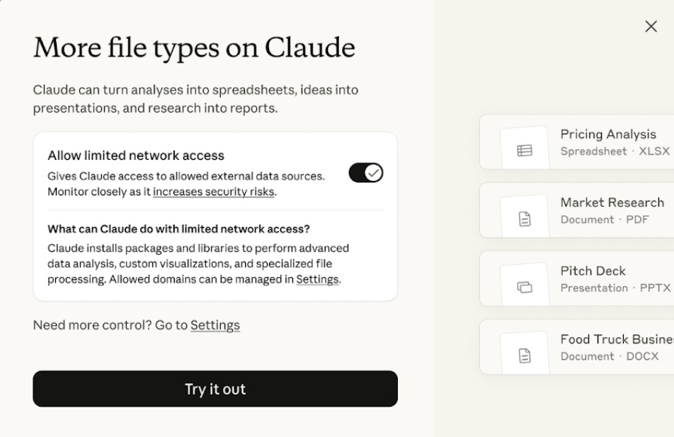

예상 소요 시간: 15분
학습 목표
이 레슨을 마치면 다음을 할 수 있습니다:
- 스킬이 무엇이며 Claude가 어떻게 활용하는지 설명할 수 있습니다
- 문서 생성을 위한 Anthropic의 기본 제공 스킬을 파악할 수 있습니다
- 설정에서 스킬을 활성화하고 관리할 수 있습니다
스킬이란 무엇인가요?
스킬은 Claude가 전문화된 작업에서 성능을 향상시키기 위해 동적으로 로드하는 지시사항, 스크립트, 리소스의 모음입니다. 전문 지식 패키지라고 생각하면 됩니다—스킬은 Claude가 특정 작업을 반복 가능한 방식으로 완료하는 방법을 가르쳐 줍니다.
Claude를 사용해 Excel 스프레드시트, PowerPoint 프레젠테이션, Word 문서 또는 PDF를 만들어 본 적이 있다면 이미 스킬이 작동하는 것을 경험하신 겁니다. 이러한 파일 생성 기능은 뒤에서 실행되는 스킬에 의해 구동됩니다.
스킬의 종류
스킬에는 두 가지 범주가 있습니다:
- Anthropic 스킬은 Anthropic이 만들고 유지 관리합니다. Excel, Word, PowerPoint 및 PDF 파일을 위한 향상된 문서 생성 기능이 포함됩니다. Anthropic 스킬은 모든 유료 사용자가 이용할 수 있으며 관련성이 있을 때 Claude가 자동으로 호출합니다—사용하기 위해 별도의 작업이 필요하지 않습니다.
- 사용자 지정 스킬은 귀하 또는 조직이 전문화된 워크플로우 및 도메인별 작업을 위해 만드는 스킬입니다. 예를 들어, 회사의 브랜드 가이드라인을 프레젠테이션에 적용하거나, 회의 노트를 특정 형식으로 구성하거나, 조직의 데이터 분석 워크플로우를 실행하는 스킬을 만들 수 있습니다.
스킬 활성화하기
스킬은 현재 Pro, Max, Team, Enterprise 플랜 사용자를 위한 기능 미리보기로 제공됩니다. 스킬을 사용하려면 코드 실행 및 파일 생성이 활성화되어 있어야 합니다. 스킬은 Claude의 안전한 샌드박스 컴퓨팅 환경이 필요하기 때문입니다.
스킬을 활성화하는 방법은 다음과 같습니다:
- 설정 > 기능으로 이동합니다
- 코드 실행 및 파일 생성이 켜져 있는지 확인합니다
- 스킬 섹션으로 스크롤합니다
- 필요에 따라 개별 스킬을 켜거나 끕니다
Enterprise 플랜의 경우, 조직 소유자가 개별 구성원이 액세스할 수 있도록 먼저 관리자 설정에서 코드 실행과 스킬을 모두 활성화해야 합니다.
Team 플랜의 경우, 이 기능 미리보기는 조직 수준에서 기본적으로 활성화되어 있습니다.
활성화되면 설정에서 Anthropic의 기본 제공 스킬과 업로드한 사용자 지정 스킬을 포함한 사용 가능한 스킬 목록을 볼 수 있습니다.
실제로 스킬 사용하기
스킬의 장점은 일반적으로 신경 쓸 필요가 없다는 것입니다—Claude가 요청에 따라 자동으로 스킬을 선택합니다. 다음은 스킬을 호출하는 프롬프트 예시입니다:
- "합계 수식이 포함된 월별 지출 추적 Excel 스프레드시트를 만들어줘"
- "이 회의 노트 문서를 PowerPoint 프레젠테이션으로 변환해줘"
- "이 데이터를 요약하는 PDF 보고서를 생성해줘"
- "시나리오 분석이 포함된 Excel 재무 모델을 만들어줘"
Claude가 스킬을 사용할 때, 작업하는 동안 Claude의 사고 과정에서 언급되는 것을 볼 수 있습니다. 결과물은 컴퓨터에 저장하거나 Google Drive에 직접 저장할 수 있는 다운로드 가능한 파일로 제공됩니다.
파일 실행
동일한 기능을 통해 Claude는 실제 파일 (격리된 환경 내에서) 을 사용하여 대신 업데이트를 수행할 수 있습니다. 슬라이드, 스프레드시트, 계약서(또는 .xlsx, .pptx, .docx, .pdf 파일)를 업로드하면 Claude가 슬라이드를 만들고, 분석을 수행하고, 편집 제안을 추가하는 것을 확인할 수 있습니다. Claude가 완료되면 이 파일들을 다운로드하거나 Drive에서 열 수 있습니다.
참고: 이 기능을 사용하려면 Claude에게 외부 데이터 소스에 대한 액세스 권한을 부여해야 합니다. 메시지가 표시되면 제한된 네트워크 액세스 허용을 켜기만 하면 됩니다:

보안 고려사항
스킬에는 실행 가능한 코드가 포함될 수 있으므로, 신중하게 사용하는 것이 중요합니다:
- 신뢰할 수 있는 출처에서만 사용자 지정 스킬을 설치하세요
- Anthropic의 기본 제공 스킬은 Anthropic이 테스트하고 유지 관리합니다
- 업로드한 사용자 지정 스킬은 개인 계정에만 비공개로 유지됩니다
외부 출처에서 사용자 지정 스킬을 설치하는 경우, 사용 전에 내용을 검토하여 무엇을 하는지 파악하세요.
사용자 지정 스킬 만들기
Anthropic의 기본 제공 스킬이 일반적인 문서 생성 작업을 다루지만, 스킬의 진정한 힘은 직접 만드는 데서 나옵니다. 사용자 지정 스킬을 통해 Claude에게 특정 워크플로우, 브랜드 가이드라인, 업무 방식을 가르칠 수 있어—Claude가 관련성이 있을 때마다 자동으로 해당 지식을 적용할 수 있습니다.
사용자 지정 스킬을 만드는 가장 쉬운 방법은 Claude와의 대화를 통해서입니다. 코드를 작성하거나 파일을 수동으로 만들 필요가 없습니다—Claude가 기술적인 구조를 처리해 줍니다.
대화를 통해 스킬을 만드는 방법은 다음과 같습니다:
- 새 채팅을 시작하고 만들고 싶은 것을 Claude에게 알려주세요. 예: "분기별 비즈니스 리뷰 작성을 위한 스킬을 만들고 싶어" 또는 "프레젠테이션에 브랜드 가이드라인을 적용하는 스킬이 필요해."
- Claude의 질문에 답하세요. Claude가 워크플로우에 대해 인터뷰하면서 다음과 같은 질문을 합니다: 이 스킬은 무엇을 해야 하나요? 이 유형의 작업에서 좋은 결과물이란 무엇인가요? 이 스킬을 사용할 예시를 들어주실 수 있나요?
- 참고 자료가 있다면 업로드하세요. 템플릿, 스타일 가이드, 브랜드 자산, 또는 자랑스러운 작업물 예시가 모두 Claude가 원하는 것을 정확히 파악하는 데 도움이 됩니다.
- 스킬을 다운로드하세요. 완료되면 Claude가 올바르게 구조화된 스킬이 포함된 다운로드 가능한 ZIP 파일을 생성합니다.
- 설정에 업로드하세요. 설정 > 기능으로 이동하여 스킬 섹션으로 스크롤하고 "스킬 업로드"를 클릭한 다음 ZIP 파일을 선택합니다.
사용자 지정 스킬은 Anthropic의 기본 제공 스킬과 함께 스킬 목록에 표시됩니다. 이후부터 Claude는 관련 작업을 할 때마다 자동으로 호출합니다—수동으로 실행할 필요가 없습니다.
스킬 vs. 프로젝트
스킬과 프로젝트 모두 Claude에게 더 많은 컨텍스트를 제공하는 데 사용할 수 있다면, 언제 각각을 사용해야 할까요? 이렇게 생각해 보세요: 프로젝트는 지식을 저장하고, 스킬은 작업을 수행합니다.
프로젝트는 지식 허브입니다. Claude가 작업을 이해하는 데 필요한 참고 자료—프로젝트 사양, 회의 노트, 연구 문서—를 보관합니다. 프로젝트에 파일을 업로드하면 Claude는 해당 프로젝트 내의 모든 대화에서 그 정보를 활용합니다.
스킬은 절차적 기계입니다. Claude가 작업을 실행하는 방법—매번 따르기를 원하는 구체적인 단계, 작업 순서, 방법론—을 인코딩합니다. 스킬은 Claude가 일관되게 실행하기를 원하는 반복 가능한 워크플로우가 있을 때 빛을 발합니다.
두 기능은 서로 보완합니다. 스킬은 프로젝트에 저장된 지식을 참조할 수 있습니다—"고객 통화 준비" 스킬이 프로젝트의 지식베이스에 업로드된 고객 프로필에서 정보를 가져올 수 있습니다. 프로젝트는 무엇(정보)을 제공하고, 스킬은 어떻게(프로세스)를 제공합니다.
| 프로젝트 | 스킬 | |
|---|---|---|
| 목적 | Claude가 참조하는 지식 저장 | Claude가 실행하는 프로세스 정의 |
| 최적 용도 | 장기 컨텍스트, 참고 자료, 팀 협업 | 반복 가능한 워크플로우, 다단계 작업, 일관된 방법론 |
| 예시 | 고객 허브, 리서치 도우미, 피드백 생성기 | 브랜드 가이드라인, 블로그 초안 작성, PDF 생성 |
| 지속성 | 프로젝트 내 모든 채팅에서 지식 사용 가능 | 스킬이 호출될 때 지시사항 적용 |
레슨 되돌아보기
계속 진행하기 전에 다음을 생각해 보세요:
- Claude의 기본 제공 스킬로 도움을 받을 수 있는 문서 유형을 정기적으로 만드시나요?
- 사용자 지정 스킬의 좋은 후보가 될 수 있는 반복적인 워크플로우가 업무에 있나요?
- 스킬이 문서 생성 및 데이터 분석에 대한 사고 방식을 어떻게 바꿀 수 있을까요?
다음 단계
다음 레슨 세트에서는 커넥터를 사용하여 Claude의 범위를 확장하기 시작합니다. 이 강력한 도구들은 정보 수집을 원활하게 하고, 작업이 이루어지는 도구 내에서 직접 작업을 수행할 수 있는 능력을 Claude에게 부여할 수 있습니다.
사용자 지정 스킬 만들기를 포함한 스킬에 대한 자세한 정보는 Anthropic 도움말 센터를 방문하세요.
피드백
강좌를 진행하면서 업무에서 강좌의 개념을 어떻게 활용하고 있는지, 그리고 의견이 있으시면 알려주세요. 피드백을 여기에 공유해 주세요.
저작권 및 라이선스
Copyright 2025 Anthropic. All rights reserved.